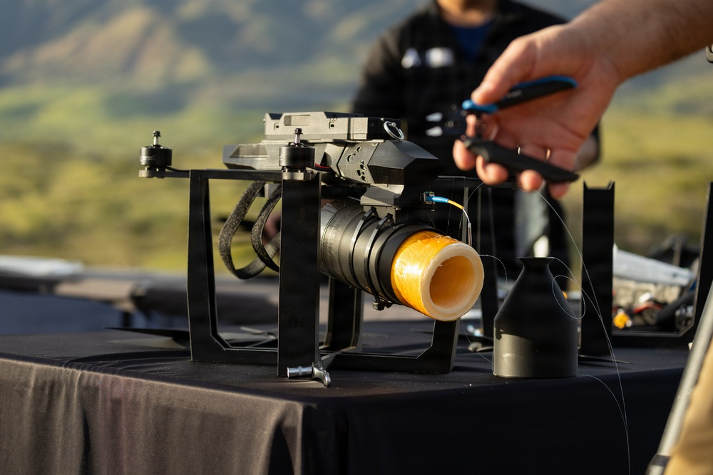

The Pentagon committed $450 million to Neros Technologies to help rebuild America's small-drone industrial base
Defense News, Monday: the Department of Defense's Office of Strategic Capital signed a $450 million conditional loan with California-based Neros Technologies to expand domestic manufacturing of small drone components, with Neros committing another $165 million of its own money to bring the total investment to $615 million. Neros' head of growth, Ross Pederson, told Military Times the expansion is "a huge benefit to the American taxpayer," noting that roughly 99% of small drone components are currently made in China. Office of Strategic Capital director David Lorch said Neros had already demonstrated an ability to design, manufacture and deliver small unmanned aircraft systems. Neros and drone maker PDW, which received an $820 million OSC loan in July, are both competing in the Pentagon's Drone Dominance Program for small combat drones.